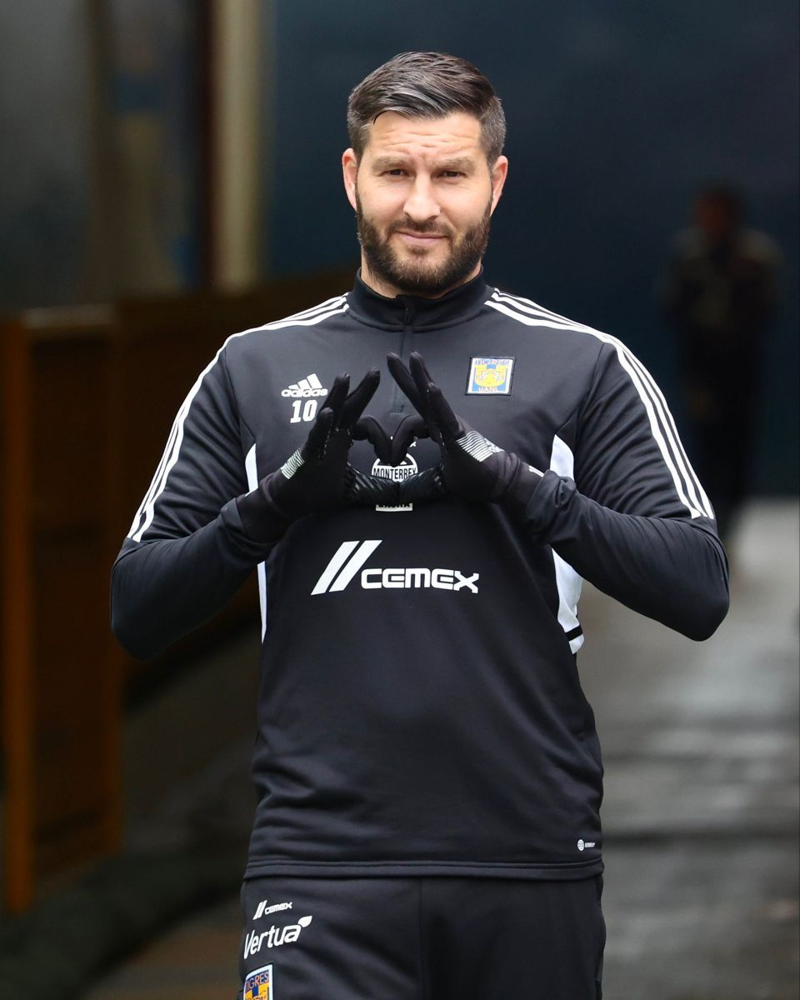
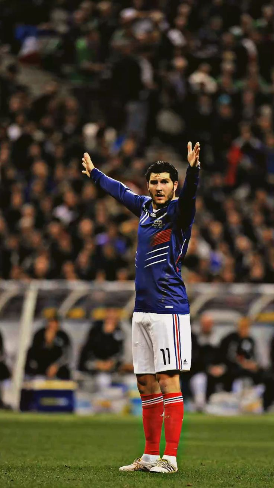
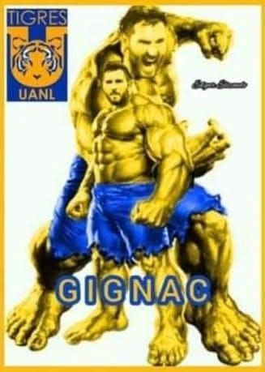
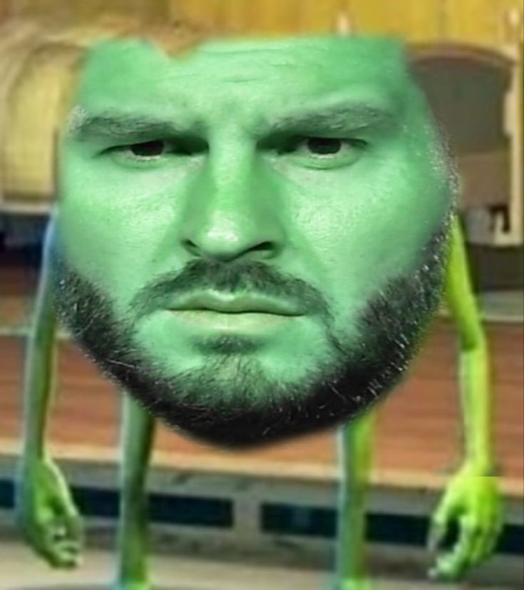

YASSER COLLIN
Conservación y fascinación por las ballenas.
Las ballenas pertenecen al orden de los cetáceos y pueden dividirse en dos grupos principales: misticetos (ballenas con barbas) y odontocetos (cetáceos con dientes, como los delfines y cachalotes). Son esenciales para la salud del océano porque ayudan a regular el flujo de nutrientes entre la superficie y las profundidades.
- Impacto ecológico: sus excretas fertilizan fitoplancton, que a su vez captura CO₂ y sostiene la cadena alimentaria marina.
- Comportamiento social: muchas especies muestran estructuras sociales complejas, comunicación y migraciones largas.
- Conservación: amenazas actuales incluyen colisiones con barcos, enredos en artes de pesca, contaminación y cambio climático.
SOFIA AVILA
Erick Raúl Alemán Ramírez — "Alemán".
Erick Raúl Alemán Ramírez, conocido artísticamente como Alemán, es un rapero y cantante mexicano originario de la escena urbana. Su trabajo ha contribuido al crecimiento del rap en México y la región, destacándose por letras directas y un estilo que mezcla hip‑hop clásico con influencias actuales del trap y la música urbana.
- Trayectoria: se le reconoce por su presencia en la escena independiente y por colaboraciones con artistas de la región, así como por proyectos que le han dado visibilidad nacional.
- Estilo musical: combina narrativa personal y urbana, con base en beats potentes y ritmos contemporáneos; su propuesta conecta con audiencias jóvenes interesadas en el rap en español.
- Impacto y temas: sus letras suelen abordar vivencias, calle, superación y reflexiones sociales; su trabajo ha impulsado conversaciones sobre la escena rapera en México.
MOISES
ESCALANTE
André-Pierre Gignac — Leyenda de Tigres.
André-Pierre Gignac es un futbolista francés que se convirtió en una de las figuras más importantes en la historia de Tigres UANL. Desde su llegada a México destacó por su capacidad goleadora, liderazgo y compromiso con el equipo.
- Trayectoria: llegó a Tigres en 2015 después de desarrollar gran parte de su carrera profesional en Francia.
- Posición: delantero centro, reconocido por su capacidad de definición, fuerza física y juego ofensivo.
- Dorsal: el número 10 se convirtió en uno de los símbolos más reconocidos de su etapa con Tigres.
- Legado: sus goles, títulos y conexión con la afición lo han convertido en una figura histórica del club.
Pasión, goles y orgullo por los colores.




YAHIR ACOSTA
FORTNITE — EPIC GAMES.
Fortnite es un videojuego desarrollado por Epic Games...
- Battle Royale: los jugadores buscan armas...
- Construcción: una de las características...
- Modo Cero Construcción: permite disfrutar...
- Eventos y colaboraciones: Fortnite ha realizado...
- Fortnite Creative: los jugadores pueden crear...
Gracias a sus actualizaciones constantes...

HERMES CARDONA
Breve descripción o información relevante acerca de Hermes Cardona. Espacio para funciones, responsabilidades o notas rápidas.
LIZBETH FLORES
Daniel Heredia Vidal — "Rels B".
Rels B, cuyo nombre real es Daniel Heredia Vidal, es un cantante, rapero y productor español nacido en Palma de Mallorca en 1993.
- Géneros: hip-hop, trap, R&B y música urbana.
- Estilo: combina rap con melodías y letras sobre relaciones, vida personal y éxito.
- Trayectoria: comenzó produciendo música y ganó popularidad de forma independiente antes de convertirse en uno de los artistas españoles más escuchados internacionalmente.
- Álbumes destacados: Flakk Daniel's LP, Happy Birthday Flakko, La Isla LP y AfroLOVA 23.
Tiene una gran presencia en Latinoamérica, especialmente en México. En pocas palabras: Rels B destaca por mezclar el rap con sonidos suaves y una estética muy personal, convirtiéndose en una figura importante de la música urbana española.